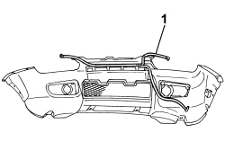

5050D13 HEADLAMP WASHER SYSTEM TYPES AND FITTINGS - R R
- Path
- Procedures > 50 AUXILIARY UNITS > 5050 SCREEN WASHERS AND HEADLAMP WASH/WIPE > 5050D HEADLAMP WASH/WIPE > 5050D13 HEADLAMP WASHER SYSTEM TYPES AND FITTINGS - R R
- Kind
- repair procedure (removal / refitting; the operation number is the code)
- Applies to
- engines: 1.3 JTD 16v; all production periods; only with equipment: SUV
- Interactive page
- https://sloeber94.github.io/elrnDB-fPnd/en/#/169002218
Applies to: engines: 1.3 JTD 16v; all production periods; only with equipment: SUV
 Removing
Removing
 Refitting
RefittingPosition the vehicle on a lift.
Disconnect the negative battery terminal.
Op. 7055A65 FRONT LIGHT CLUSTER MOULDING.FRAME (ONE) LH OR RH R R
[Both]
Op. 7055A42 FRONT GRILLE - R+R
Op. 4450B12 FRONT OR REAR WHEELS (TWO) - R+R
Op. 7055B65 ENGINGE BAY DUSTGUARD PROTECTION IN LEFT FRONT WHEEL ARCH R R
Op. 7055B66 ENGINE BAY DUSTGUARD PROTECTION IN RIGHT FRONT WHEEL ARCH R R
Op. 7055A24 MOULDING ON FRONT WHEEL ARCH ONE LH OR RH R R
[Both]
Op. 5550C30 L/H OR R/H FRONT TURN SIGNAL (ONE) - R+R
[Both]
Applies to: engines: 1.3 JTD 16v; all production periods; only with equipment: SUV
1. Release the pipes from the retaining springs and remove them.

Applies to: engines: 1.3 JTD 16v; all production periods; only with equipment: SUV
Refitting
Removing1. Fit the headlamp washer pipes in their seat on the bumper and secure with clips.

Applies to: engines: 1.3 JTD 16v; all production periods; only with equipment: SUV
Op. 5550C30 L/H OR R/H FRONT TURN SIGNAL (ONE) - R+R
[Both]
Op. 7055A24 MOULDING ON FRONT WHEEL ARCH ONE LH OR RH R R
[Both]
Op. 7055B66 ENGINE BAY DUSTGUARD PROTECTION IN RIGHT FRONT WHEEL ARCH R R
Op. 7055B65 ENGINGE BAY DUSTGUARD PROTECTION IN LEFT FRONT WHEEL ARCH R R
Op. 4450B12 FRONT OR REAR WHEELS (TWO) - R+R
Op. 7055A42 FRONT GRILLE - R+R
Op. 7055A65 FRONT LIGHT CLUSTER MOULDING.FRAME (ONE) LH OR RH R R
[Both]
Connect the negative battery terminal.
Remove the vehicle from the lift.
Topics linked from this page (8)
- 4450B12 front or rear wheels (two) - r+r
- 5550C30 L/H OR R/H FRONT TURN SIGNAL (ONE) - R+R
- 7055A24 MOULDING ON FRONT WHEEL ARCH ONE LH OR RH R R
- 7055A42 FRONT GRILLE - R+R
- 7055A65 FRONT LIGHT CLUSTER MOULDING.FRAME (ONE) LH OR RH R R
- 7055B65 ENGINGE BAY DUSTGUARD PROTECTION IN LEFT FRONT WHEEL ARCH R R
- 7055B66 ENGINE COMPARTMENT DUST SHIELD PROTECTION IN RIGHT FRONT WHEEL ARCH - R.R.
- 7210E10 R.R. FRONT BUMPER